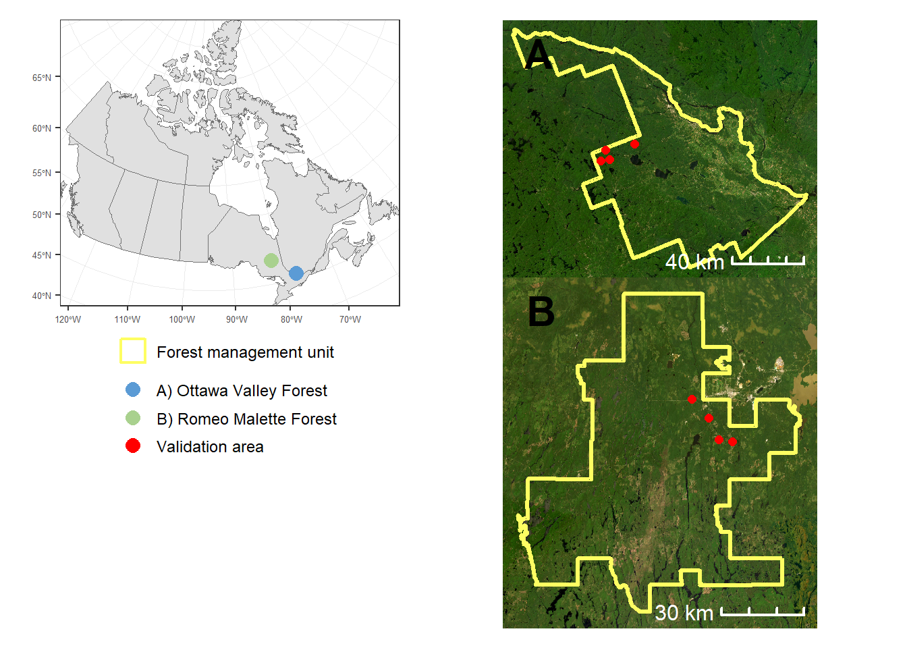

Introduction
1 Project summary
Forest managers increasingly have access to detailed, wall-to-wall information on forest structure, but operational planning still relies largely on stand polygons. This project developed and tested an automated framework for transforming LiDAR-derived enhanced forest inventory data into forest stands that can be used in operational inventory and planning. Applied in the Romeo Malette and Ottawa Valley forest management units, the workflow combines automated stand delineation, extraction of LiDAR-derived forest attributes, integration of disturbance and age information, and flexible attribution of species composition. The project produced new stand delineations, an open-source implementation of the workflow, and a comparative assessment of polygon quality based on structural homogeneity, representation of forest variability, and correspondence with independently detected structural transitions.
2 Project context
Forest inventory systems rely on spatially explicit information to describe forest conditions and support forest management planning. In operational inventories, this information is typically organized within stand polygons, which provide the spatial units used to summarize attributes such as volume, tree density, canopy structure, species composition, age, and disturbance history. The usefulness of these products therefore depends not only on the accuracy of the forest attributes themselves, but also on the relevance of the spatial units used to represent and aggregate them. In Ontario, conventional Forest Resources Inventory products have historically relied on aerial photo-interpretation to delineate relatively homogeneous forest stands and assign interpreted attributes. This approach remains central to forest management planning, but it is time-consuming, partly subjective, and difficult to update frequently across large forest management units. As forest conditions change through harvesting, natural disturbance, succession, and stand development, there is a growing need for more consistent, reproducible, and updateable approaches to stand delineation and attribution.
Recent investments in airborne single photon LiDAR provide an opportunity to modernize this workflow. Ontario’s Forest Resources Inventory leaf-on LiDAR program provides SPL data and derived products to support FRI development, including canopy height models, terrain models, forest inventory raster metrics, and forest inventory attributes. These datasets can be used to describe forest structure wall-to-wall and to support polygon-based inventory products that are more consistent with current forest conditions.
However, moving from wall-to-wall raster products to operational forest inventory polygons remains a key challenge. Forest managers still require polygon-based products for planning, reporting, growth and yield projections, and operational decision-making. Automated stand delineation must therefore produce polygons that are not only technically reproducible, but also meaningful for forest inventory use: internally homogeneous, distinct from neighbouring units, and aligned with real structural transitions in the landscape.
This project, funded by the Knowledge Transfer and Tool Development (KTTD) of the Forestry Futures Trust Ontario, was designed to refine and operationalize an automated polygon-based inventory framework that integrates LiDAR-derived enhanced forest inventory attributes, conventional FRI information, and additional disturbance and attribution layers. The project builds on previous open-source tools developed to integrate photo-interpreted and LiDAR-derived forest attributes into a polygonal forest inventory framework.
3 Previous work
The previous Forestry Futures Trust project, led by the University of British Columbia in collaboration with GreenFirst Forest Products, the Ontario Ministry of Natural Resources and Forestry, and Université Laval, developed an open-source framework to integrate photo-interpreted and airborne LiDAR-derived attributes into a polygonal forest inventory. That work addressed a practical operational question: how can area-based LiDAR estimates, produced as raster layers, be aggregated into inventory polygons that remain compatible with strategic and tactical forest management needs?
The project demonstrated that Generic Region Merging segmentation could be used to generate new polygons from LiDAR-derived forest attributes, producing stand-like units that were more consistent with current forest structure than older FRI polygons in some areas. It also developed an imputation workflow to transfer interpreted attributes from existing FRI polygons to newly generated polygons, allowing the new polygon layer to retain information not directly predicted from LiDAR, such as species composition and age.
This work represented an important proof of concept, but several issues remained before the approach could be more broadly implemented:
The segmentation workflow needed to be refined to produce polygons that were more compatible with the shape, size, and spatial structure expected in operational forest inventories.
The approach required further testing across contrasting forest types, particularly beyond the boreal conditions where much of the initial development occurred.
Additional attributes such as disturbance history, stand age, and species composition needed to be better integrated or updated when legacy FRI information no longer reflected current forest conditions.
The quality of the resulting polygons needed to be evaluated using criteria that go beyond simple visual comparison with existing photo-interpreted forest inventory maps.
A central remaining question was how to evaluate the quality of the resulting polygons. Previous work showed that automated stand delineation could generate structurally homogeneous units, but an operational validation framework also needs to ask whether polygons effectively partition forest variability and whether their boundaries correspond to real changes in forest structure. These criteria guided the validation component of the present project.
4 Project objectives
The general objective of this project was to refine an automated stand delineation and attribution framework so that it can better support operational forest inventory modernization in Ontario.
More specifically, the project aimed to:
- Refine the automated segmentation workflow
The project tested and adjusted the segmentation approach to improve its transferability across forest types, with a focus on producing polygons that are more compatible with operational FRI products in terms of size, shape, and structural relevance.
- Integrate LiDAR-derived enhanced forest inventory attributes
The workflow was designed to incorporate wall-to-wall EFI raster attributes produced from Ontario’s SPL LiDAR data, allowing structural attributes such as height, volume, basal area, density, and canopy metrics to be summarized within newly delineated polygons.
- Incorporate disturbance and age information
The project integrated disturbance information from provincial and national disturbance products to improve the temporal consistency of the new polygon inventory, particularly in areas where the existing FRI did not reflect more recent harvests or natural disturbances.
- Maintain flexibility for species composition attribution
The initial proposal included additional work on imputing species composition into newly generated polygons. During the project, this component was refined. Improvements from the original imputation approach were limited, while a parallel project using deep learning approaches showed stronger potential for species composition mapping. As a result, the framework was designed to remain flexible: species composition can be incorporated from any compatible raster product, including future outputs from deep learning models, rather than being tied to a single imputation method.
- Evaluate the quality of automated stand delineations
The project developed and applied a validation framework based on three complementary criteria:
Internal structural homogeneity;
The ability of polygons to partition forest structural variability;
The correspondence between mapped polygon boundaries and independently detected structural transitions.
5 Study area
[ADD TEXT HERE]